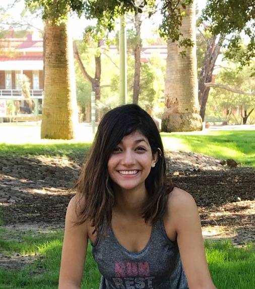

About Me

I am a medical research technician at the University of Arizona. I work on the immune system and how to create tools to target pathogens. I use big data processing platforms and pipelines to identify pathogenic bacteria in the digestive system. This is where I became interested in computer science and programming.
This should be a summary of the projects I have worked on. Currently I have very little web development and programming experience. I have some self-taught experience using python and R to analyze data.
This area would normally be links to some of my projects or my CV.
I have three dogs. Molly is a beagle-heeler mix, Rosie is a Boston terrier, and Rocky is a Sheba Inu mix. My favorite hobbies include hiking, painting, and playing with my dogs.